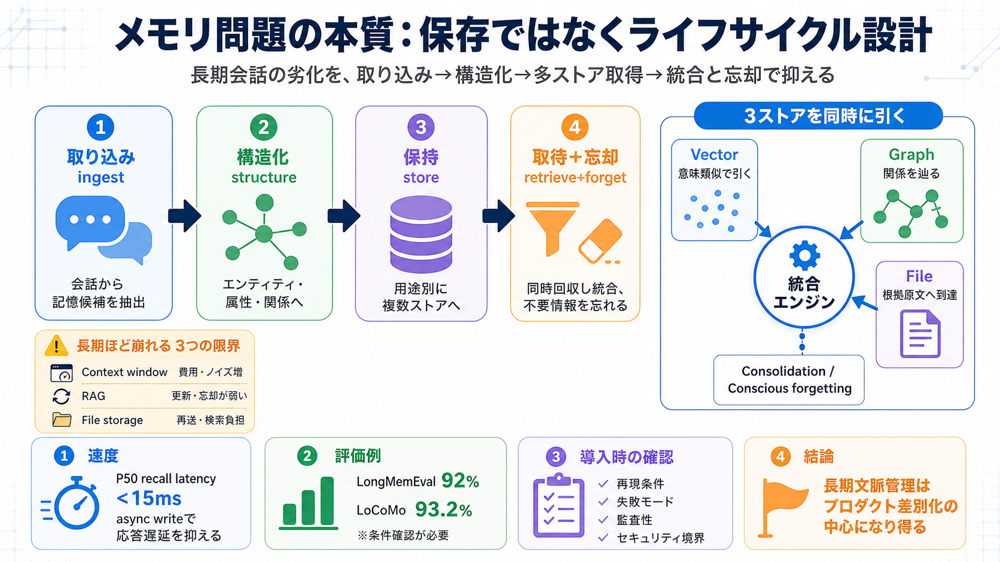

Paper page - Agentic Context Management
The reference implementation (Maximem Synap) reports 92% on LongMemEval and 93.2% on LoCoMo with a smaller answer model …

「保存・検索」だけでは長期会話の失敗を止められない。取り込み→構造化→多ストア同時取得→統合と忘却までを設計する。
長期になるほど、入力（コンテキスト）を増やしても、RAGで引いても、ファイル保存でも、関連性・精度・運用コストが破綻しやすい。
Agentic Context Management（エージェンティック・コンテキスト管理）は、情報を「入れて、構造化して、必要時に引いて、忘れる」までを一連の設計にする。
Synapの例では、会話ターンをDBへそのまま置かず、意味を抽出してベクタ・グラフ・ファイルへ非同期で書き込み、検索時に同時に回収して統合する。
さらにバックグラウンドで統合（Consolidation）や意識的な忘却（Conscious forgetting）を行い、長期劣化に対処する。
記憶は“残す”だけでなく、“更新し、統合し、不要になれば消す”ことが品質を左右する。
長期メモリは処理量が増えるため、体験に直結する取得レイテンシ（回収速度）を要件として示している。
長い会話での“覚えているか”を評価する指標として、LongMemEvalとLoCoMoの精度を提示している。
最大の差は「保存/検索を良くする」ではなく、更新・統合・忘却といった運用の制御をパイプラインとして持つ点にある。
提示数値（92%など）を一般化するには、同一条件か、失敗の内訳は何かを追加で確認する必要がある。
Agentic Context Managementの価値は、長期で起きる参照漏れ・誤参照を“保存以外”のライフサイクルとアーキテクチャで抑える点にある。
The reference implementation (Maximem Synap) reports 92% on LongMemEval and 93.2% on LoCoMo with a smaller answer model …
Reproducible agent-memory benchmark results for Maximem Synap — 93.2% LoCoMo, 92.0% LongMemEval (gpt-5-mini). Methodolog…
Maximem (2026c). Maximem Synap Updates: Higher Scores, 17 Integrations, and a Live Playground. maximem.ai blog, May 27, …
### Q. What benchmarks measure AI agent memory quality? Three benchmarks commonly define the field: LoCoMo (1,540 quest…
## How I would use these statistics The three numbers I lead with when writing about AI memory in 2026:Mem0's 90% token…